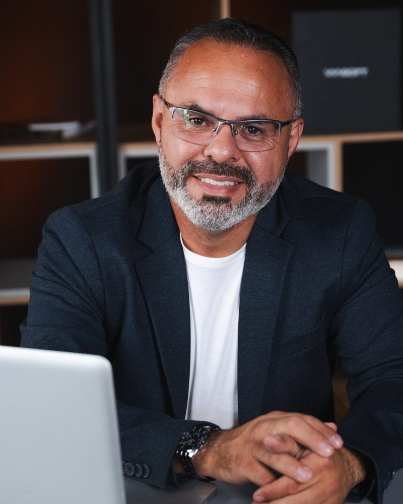

Rio de Janeiro
Parceiro: Centrimóveis
Início em 24/02/2027- Curso presencial · local a confirmar
- Quartas e quintas, 18h30 às 22h
- Fevereiro a junho de 2027
Uma formação prática, com base legal e ferramentas prontas para usar no condomínio. Turmas presenciais com parceiros em quatro cidades.
Entre com o e-mail que você informou na matrícula. No primeiro acesso, clique em "Criar minha senha".
Parceiro: Centrimóveis
Início em 24/02/2027Parceiro: Condo Hub
Turma em breveParceiro a definir
Turma em breveParceiro a definir
Turma em breveCada módulo tem quatro aulas, com prática, base legal e ferramentas do Kit do Síndico. Ao longo do curso, o aluno monta um Plano de Gestão real para um condomínio.
Papel do síndico, transição, comunicação, implantação de condomínios e contratos.
Direito condominial, conselho e administradora, assembleias, notificações e multas.
Orçamento, fundo de reserva, prestação de contas, inadimplência, folha e tributos.
Plano de manutenção, autovistoria, obras, sistemas críticos e seguro.
Conflitos e mediação, equipe e terceirização, locação por temporada e acessibilidade.
Inteligência artificial, tecnologia e LGPD, carreira do síndico profissional e simulação de assembleia.
Certificado de extensão universitária de 80 horas, emitido por instituição credenciada pelo MEC, para quem tem frequência mínima de 75% e média 7,0 ou mais.

Administrador · Síndico Profissional · Professor Universitário · Escritor · Palestrante
Administrador, mestre em Planejamento e Governança pela Universidade Tecnológica Federal do Paraná (UTFPR), com MBA em Gestão de Negócios e mais de 15 anos de docência em graduação e pós-graduação em Administração, Economia e Contabilidade.
Professor universitário, síndico profissional, consultor, palestrante e escritor, atua na formação de profissionais para o mercado condominial, unindo conhecimento acadêmico, experiência prática e visão empreendedora. Já formou mais de 2.500 alunos em diferentes regiões do Brasil, em cursos, formações executivas, imersões e palestras, e coordena programas de MBA e de formação executiva voltados à gestão condominial.
É idealizador e apresentador da Live do PC, encontro semanal que reúne em média 100 síndicos para discutir desafios, tendências e problemas reais da gestão condominial. Como palestrante, já esteve em eventos e formações em mais de 20 estados, falando de gestão condominial, empreendedorismo, inovação, liderança, estratégia e governança.
Autor de seis livros, dois deles sobre gestão condominial.
Outros livros do autor: Logística de Venda Direta; Estratégias de Marketing de Rede e de Vendas Diretas; Empreendedorismo e Capacidade Inovadora no Setor Público; Políticas Públicas e Governança na Atualidade.